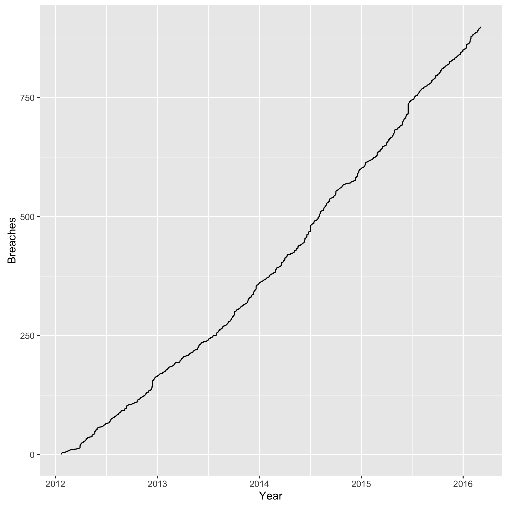
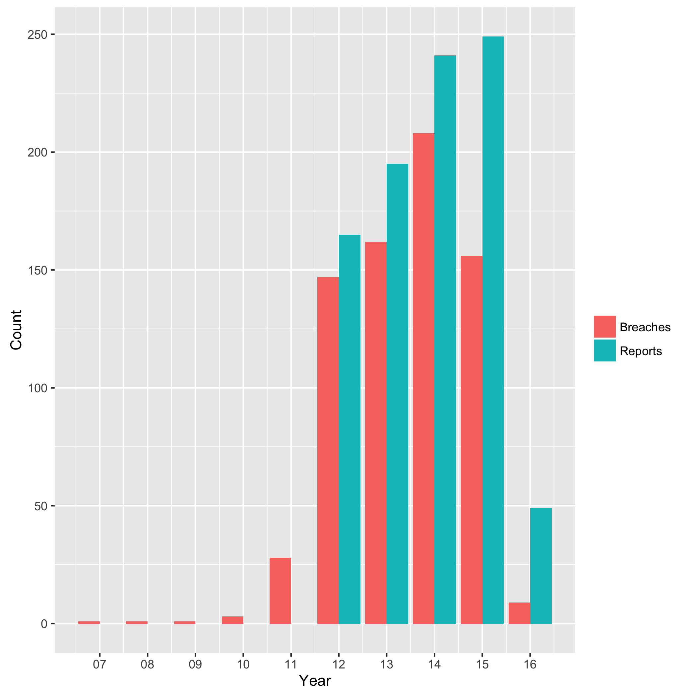
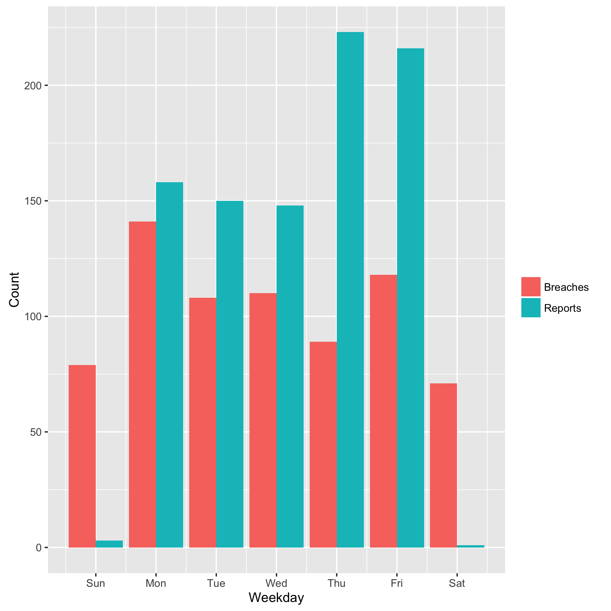
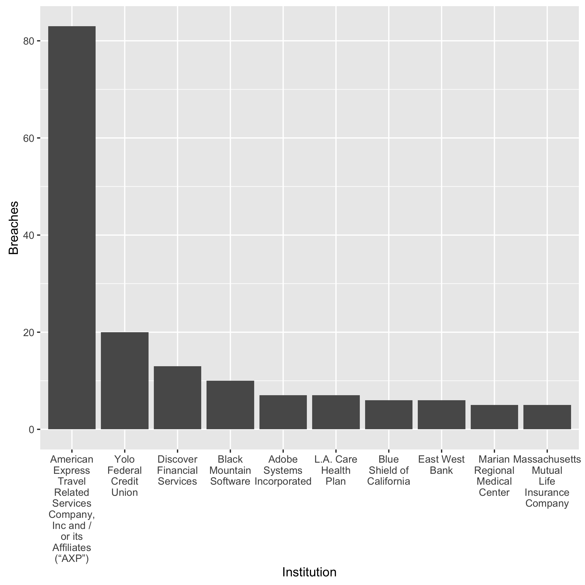
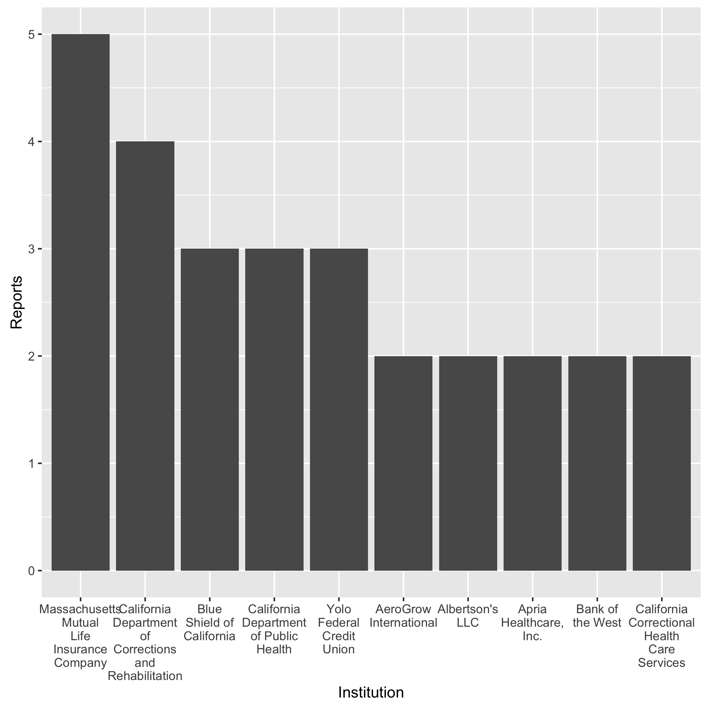
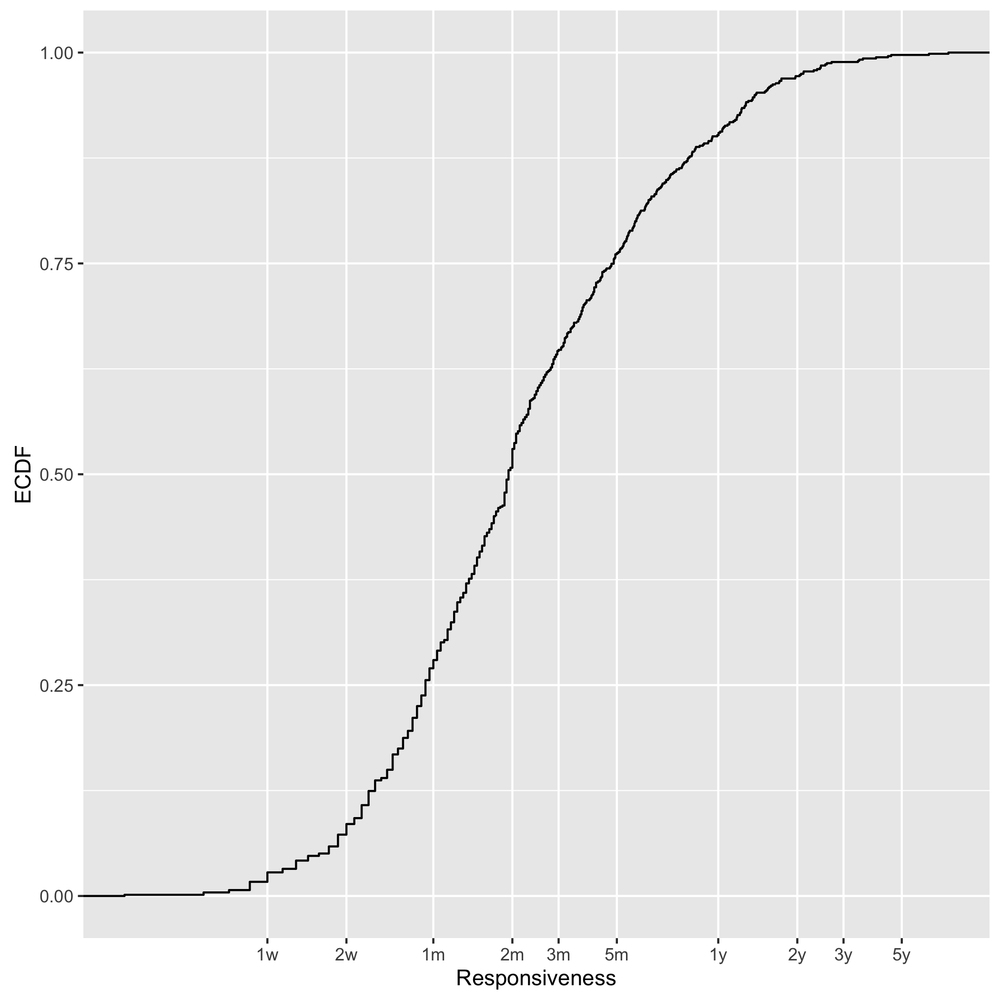
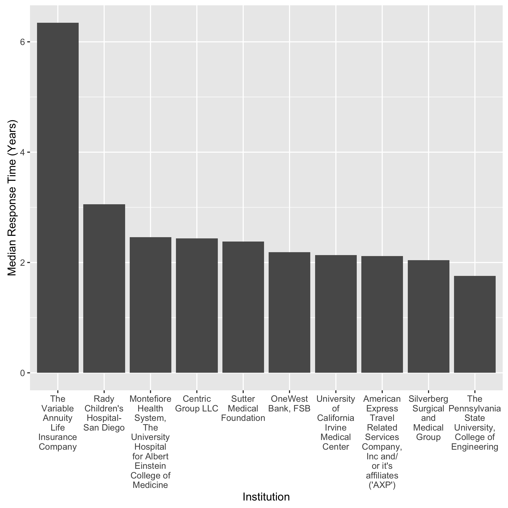
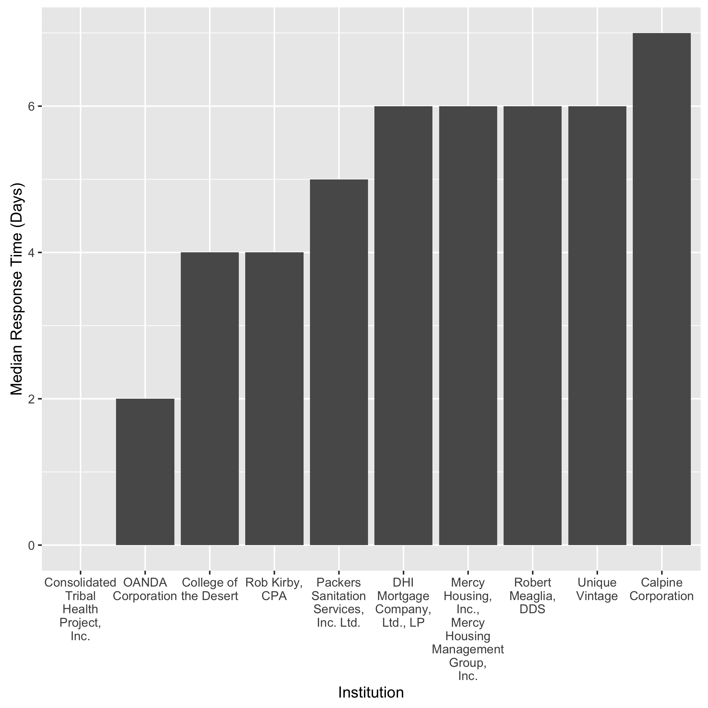
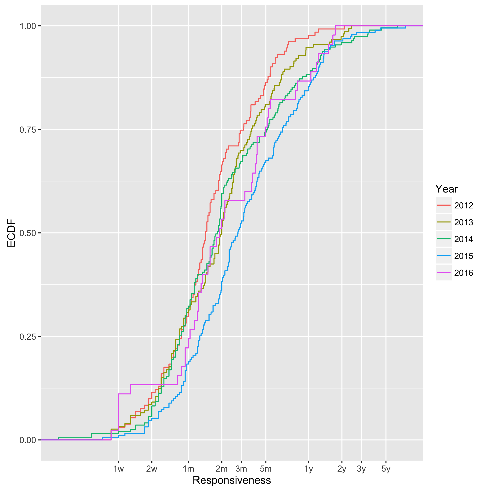

California Data Breaches
California makes data breach reports transparent to the public, thanks to excellent laws:
California law requires a business or state agency to notify any California resident whose unencrypted personal information, as defined, was acquired, or reasonably believed to have been acquired, by an unauthorized person
If an organization loses unencrypted personal identifiable information (PII), they must notify the involved people. The Department of Justice maintains a list of all data breaches since January 2012. In this article, I am taking a look at what we can learn from this data set.
Data Set
As of this writing, the list consists of 740 entries. Each row represents one or more reported data breaches of a single organization and includes the date of the breach and when it was reported. If we consider all breaches, we arrive at a total of 899. A total of 183 (20%) breaches have an unknown breach date.
Analysis
Given this data set, I am trying to answer the following questions:
- What does the distribution of breaches and reports look like?
- Which organizations have been breached most?
- What can we tell about responsiveness, i.e., the time from breach to disclosure?
Breach Distribution
First, let us get a high-level idea of the data. The plot below shows the cumulative number of breach reports over time.

We observe a steady and linear increase over time. The next plot shows the number of breaches and reports by year.

2014 had the most breaches, while 2015 the most reports. From 2012 to 2015, we have a mean of 168 breaches per year. There is a natural lag in this data, from the time to breach until report, as we see later when assessing responsiveness.
Does a particular weekday stand out, when looking at breaches and reports? The following plot attempts to answer this question.

While breaches occur rather uniformly across the week, reports tend to focus on the last workdays of the week. Naturally, we do not see official reports on the weekend. One explanation for the higher reports near the weekend may be that incident responders were given a deadline to finish their report out “by the end of the week.”
Leaderboard
Which organizations have experience the most breaches?

We can see that American Express leads the game. However, some financial organizations (American Express, Discover) also have to report breaches which occurred at the merchants, so consider the numbers with a grain of salt. Let’s take the two out in the next plots, which shows the number the organizations with the most number of reports.

The health sector dominates in this ranking, followed by financial service organization. Clearly, Yolo Federal Credit Union lives up to its name.
Responsiveness
Let us take a closer look at the responsiveness: the time from when the data breach occurred to when the organization reported it. The law requires reporting individuals “in the most expedient time possible and without unreasonable delay.”
At first, I found that one entry in the data set has a negative responsiveness, which did not make sense. How can an organization report a breach before it occurred? I wrote the Office of the Attorney General an email for clarification, and it turned out it was typo. They fixed it within a few hours.
The plot below shows the empirical cumulative distribution function (ECDF) of the response time.

We observe a median response time of 2 months. The 1st quartile is at 1 month and the 3rd at 5 months. 10% of all breaches take longer than 1 year and 3% longer than 2 years. We obviously grapple with advanced persistent threats.
Let’s look at the two ends of this spectrum: the slowest and the fastest responders.
 
The first plot shows the slowest responders and the second the fastest. Note that the first y-axis is in terms of years and the latter in days. If a company experienced multiple breaches, I took the median of those where the breach time is available. (In 183 cases, organizations did not know when the breach occured.) As we see in the first plot, the health sector clearly exhibits the slowest response time, but the financial sector and universities follow. The fastest responder was Consolidated Tribal Health Project, Inc., with a report going out on the same day as the breach. This particular breach involved a disgrunteled former employee. Other than that, no clear market sector pattern stands out.
What happens, when we look at a yearly analysis? Did the industry got any better over time? The next plot attempts to go deeper into this question, by grouping the responsiveness by the report year.

First, I encourage you to squint a little and do not pay much attention to the 2016 distribution. We have just finished Q1 in this year not yet enough data to compare this year to the other ones. For 2012 and 2015, we see an increasing responsiveness. The median responsiveness in 2012 was 43 days, and 83 in 2015. Almost twice as much! Visually, we see that the blue 2015 line “detaches” itself from the other three. In fact, the distance roughly corresponds to 50% in time, e.g., the median responsiveness in 2014 was 55 days, and 83.5 days in 2015, which is an increase of 51%.
What we cannot learn from this data, is the obvious next question: why? Is this a policy problem? Do we need better workflows in incident response teams? Or is a technical issue?
My own research strongly focuses on the technical aspect: I am developing better tools for network forensics at scale with the open-source platform VAST (Visibility Across Space and Time), which our USENIX NSDI’16 paper describes in more detail.
Conclusion
When looking at California breach data from a high-level, we can draw the following conclusions:
-
We observe a steady amount of data breaches.
-
Organizations from the health and financial sector have experienced the most number of breaches per institution. (Note: across organizations, the retail sector exhibits the largest number of breaches with 25%, followed by “other” with 19%, finance with 18%, and then health care with 16%.)
-
The responsiveness in incident reporting increases over the years. In 2015, the median response time was 50% higher than in 2014. The health sector appears to have the slowest response times.
For an in-depth analysis, also check out Attorney General Kamala D. Harris’ data breach report, which includes more details about sector distribution, number of records breached, and breach types.
To promote reproducibility, I make available all my R code I used for this analysis.
Load Comments